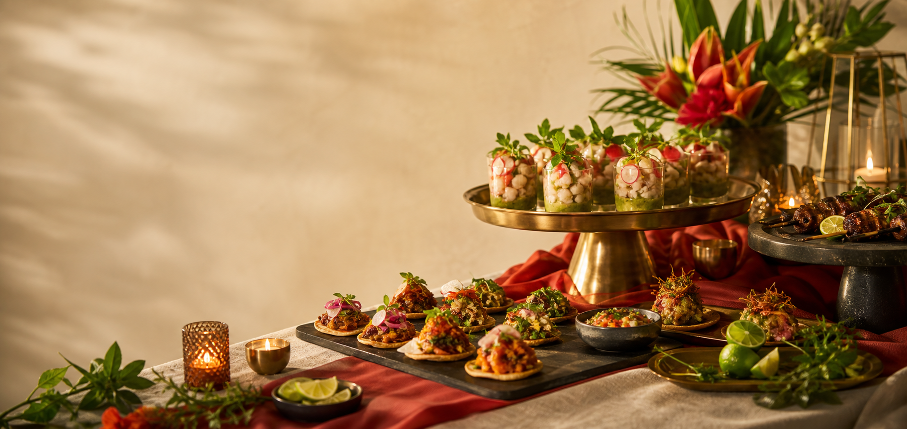

Small Plates & Grazing
Passed apps, cheese and meat boards, crispy bites, seasonal vegetables, sauces, and shareable starters.
- Cocktail hour service
- Boards and snack tables
- Vegetarian-friendly options

Wood-fired roots. Custom menus. Smooth service.
Catering built from Tre's Italian and wood-fired kitchen experience, then opened up for whatever the event needs: pizza, pasta, small plates, mains, snacks, desserts, and full custom spreads.
Event rhythm
Start with grazing boards, shift into hot pizza and pasta, add proteins and sides, then close with sweets or late-night snacks. Every package can be tightened for quick service or stretched into a slow dinner.
Wood-fired package
A familiar party format with elevated flavors, easy portions, and food that keeps moving.
Atmosphere
Quick quote
Use the form to sketch the event. The estimate updates as you adjust guest count and service style.